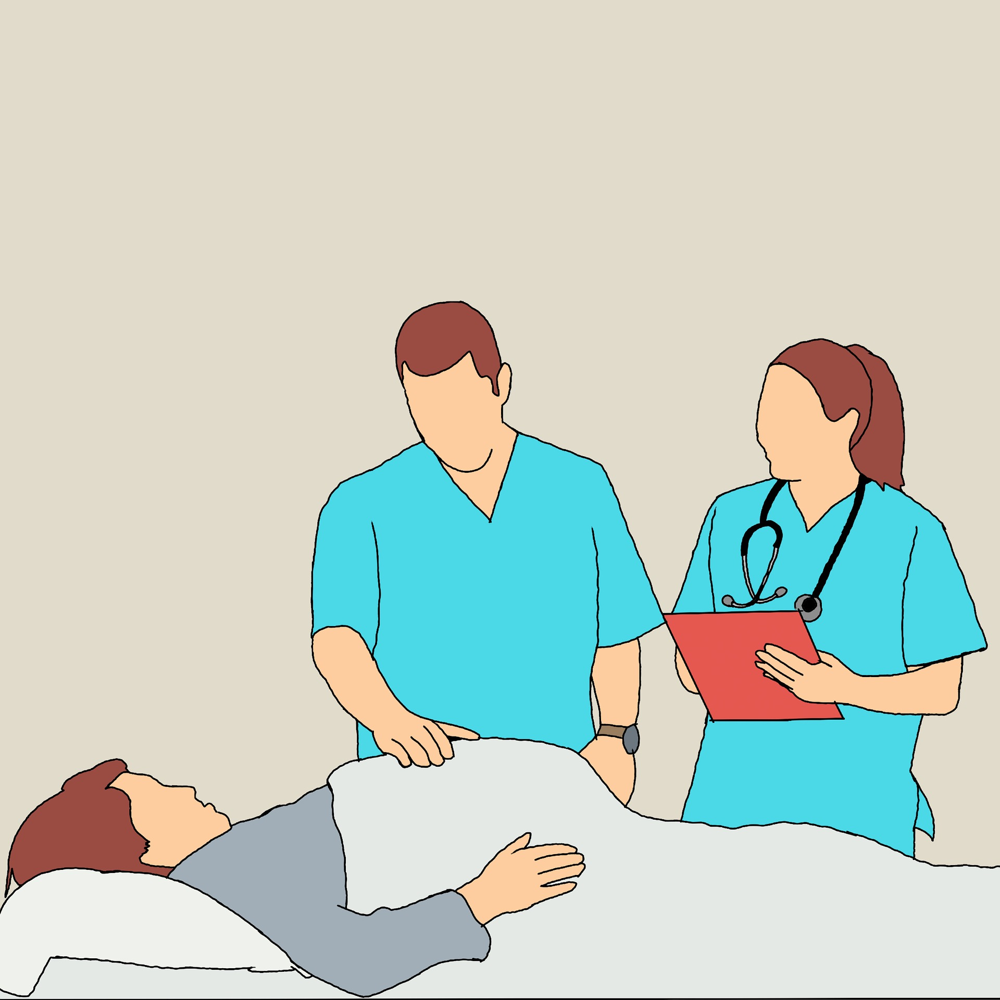

EMDR Therapy for Stress Management Singapore provides techniques to address the root causes of chronic stress, helping clients achieve relaxation and improved mental balance.
EMDR uses structured eye movements and other bilateral stimulation to help your brain reprocess stressful triggers. In Singapore, it can reduce overreactivity to everyday pressures and improve emotional regulation. Many clients notice calmer body sensations and clearer thinking after several guided sessions.
Fast-paced work and study environments in Singapore can strain balance, and EMDR offers a focused path to reset. Sessions target specific stress cues, linking them with calming anchors so reactions fade over time. You and your therapist set practical goals, track progress, and strengthen resilience between sessions.
Look for EMDR-certified, licensed mental health professionals who practice locally and understand Singapore’s diverse communities. An initial consultation typically covers your stress history, session structure, and safety planning. Many clinics offer both in-person and secure telehealth options for convenient scheduling.
EMDR is a structured psychotherapy that uses bilateral stimulation (e.g., eye movements or taps) to help the brain reprocess distressing memories, triggers, and negative beliefs that fuel stress. For stress management, it can reduce reactivity to work or family triggers, improve emotional regulation, and strengthen coping skills. It’s delivered by trained clinicians in Singapore and can complement approaches like CBT and mindfulness.
Sessions typically include assessment and goal-setting, preparation with grounding skills, then sets of bilateral stimulation while you focus on a target memory or trigger, with brief check-ins and a calm closure. Appointments usually last 60–90 minutes. Many people notice progress in 6–12 sessions for a focused issue; complex or long-standing stress patterns may take longer.
Look for a mental health professional who has completed EMDR training, treats stress/anxiety, and is registered with a relevant professional body in Singapore. Ask about approach, fees, and fit in a brief consult. Many providers offer both in-person and telehealth EMDR locally; fees vary by clinician and length, and any insurance coverage depends on your policy—confirm with your insurer.